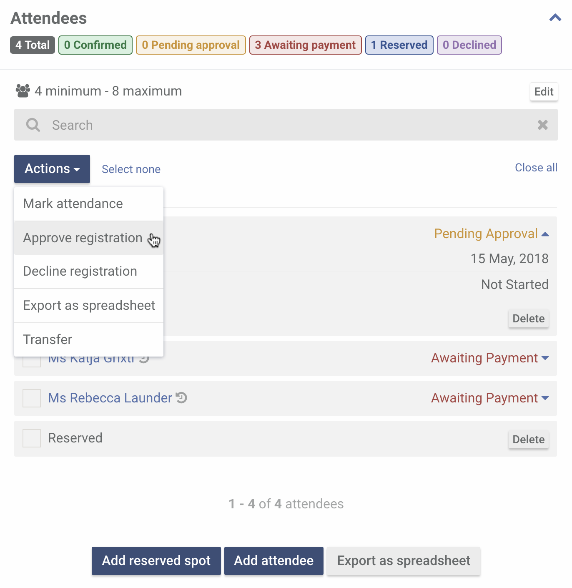
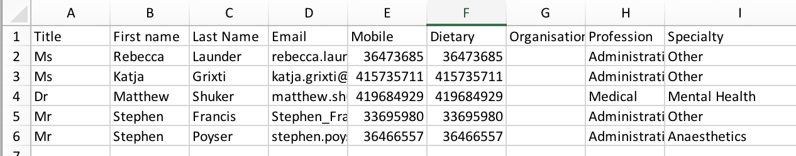
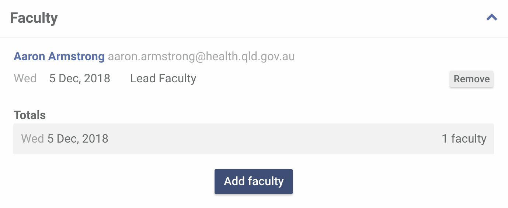

Managing a course booking
A course booking profile allows you to run a course from start to finish. If you haven't created one yet, learn how to create a booking.
-
Managing attendees
Once a course booking is created, people can register for a booking right away. A course booking does not need to be approved nor confirmed to be open for registration.
-
Adding an attendee manually
In situations where you may have to add a participant manually to a booking, make sure that the participant has an account with CSDS first.
If you need to familiarise yourself with the sign-up process, learn how users register for an account.
To add an attendee manually, click Add attendee

In the pop-up that appears, enter the name of the participant you want to add.

Click the participant's name in the results area to add them in the booking.

Choose a course price for the participant you are adding. Then click Add.

And you're done. Just take note that an attendee that has been added manually is considered confirmed (approved and paid).
-
Approving course registrations
When someone registers for a course, they receive an email that they need to be approved first. Your Pocket Centre contact also gets an email every time someone registers for any of your Pocket Centre courses.
Learn how to update your Pocket Centre contact details.
This is how a participant who needs approval appears in the attendees section.

To approve a registration, select the participant you are approving.
Yes, you can select multiple participants at once.
Then click Approve registration.
Once a participant is approved, they will get an email letting them know that someone from your Pocket Centre will contact them to arrange payment. That participant's booking status will change to Awaiting Payment.
Can I decline a participant's registration?
Yes. Just select the participant you want to decline. From the actions dropdown, click Decline registration. An email is sent to the participant informing them about this action.
Can I approve someone that I declined before?
As long as the course is not yet full, yes you can. If a participant has previously been marked as Paid, their status will go from Declined to Confirmed right away.
-
Marking a participant as paid
Marking a participant as paid confirms their booking to the course. Once marked, they get an email confirming their registration with the details of the eLearning (if applicable) and their face-to-face course.
To mark a participant as paid, select the participant you want to mark.

From the actions dropdown, click Mark as paid.

Their status should change from Awaiting Payment to Confirmed.
Can I mark a participant as not paid?
Yes. Select the participant you want to mark as not paid from the list. From the actions dropdown, click Mark as not paid. No email is sent to the participant when you do this.
-
Removing an attendee
To remove an attendee, select the participant you want to mark as not paid from the list. From the actions dropdown, click Remove. No email is sent to the participant when you do this.
Can I add an attendee that I have removed before?
Yes. Please refer to Adding an attendee manually.
-
Reserved spots
Reserved spots are used to limit the number of participants that can register to the maximum number of participants minus the reserved spots. Remember that a reserved spot is considered "confirmed".
Only add a reserved spot if you can guarantee that the participant will pay.
To add a reserved spot, click Add reserved spot.
The reserved spot should appear at the top of the list.
To remove a reserved spot, just select a reserved spot you want to remove then click Actions and select Remove. This action will immediately remove the selected reserved spot.
-
Exporting attendees list
To export a list, select the participants you want included and from the actions dropdown, click Export as spreadsheet. This will download a CSV file that you can open in your preferred spreadsheet software.
Here's a sample of what the spreadsheet contains:
 -
Marking course outcomes
Course certificates are generated only when participant outcomes are recorded. eLearning certificates are generated automatically when the participant completes them and can be accessed through their own account.
Marking course outcomes is a two-step process. The first step is to record a participant's attendance. To do this, select a participant and from the actions dropdown click Participant outcomes.

In the modal that appears, select whether the participant has attended or not. Then click Save.
If a participant attended, a course outcome also has to be recorded. Comments are optional. Click Save to set the participant outcome.
Depending on the course, the options available are Passed, Passed (Provisional), Failed, Completed and Not completed.

Upon saving, participants who passed (including the provisional) will get access to their course certificates thru their accounts.

-
Adding faculty
Adding faculty is a great way to roster schedule and availability of your staff in the Pocket Centre. Note that all faculty must have an account with CSDS and have the Faculty role.
Contact us if you can't find a faculty in your list.
To add a faculty, click Add faculty.
In the pop-up that appears, click the name of the faculty you want to add. You can navigate through the list or use the search bar to filter the results.

Select the faculty's role for all the days of the course.

Click Add to save the record.

Repeat the process to add more faculty. To remove a faculty click Remove.
